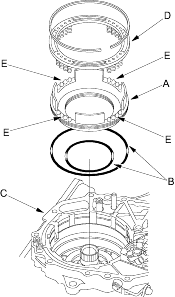
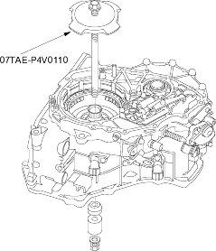
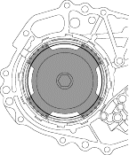

Reverse brake spring compressor, 07TAE-P4V0110
- Install the ATF feed pipe in the transmission housing and install the three ATF feed pipes with the new O-rings in the transmission housing.
- Install the two dowel pins and new transmission gasket on the transmission housing.
- Push the control shaft toward the outside of the transmission housing, then install the intermediate housing (four bolts).
- Install the manual valve body separator plate and two dowel pins on the intermediate housing and install the manual valve body with the detent spring (five bolts).
- Put the control shaft back, then install the roller in the intermediate housing with aligning the groove on the control shaft.
- Install the reverse brake piston (A) with the new O-ring (B) in the intermediate housing (C).

- Install the spring retainer/return spring assembly (D); Install the return springs on the spring guides (E) on the reverse brake piston.
- Install the special tool through the drive pulley shaft to compress the return spring. Be sure the special tool (spring compressor attachment) is set over the return springs, not over the reverse brake piston.

- Compress the return springs with making sure that the special tool set over the return springs and the spring retainer tabs does not ride on the reverse brake piston.

- Install the snap ring in the intermediate housing above the spring retainer.